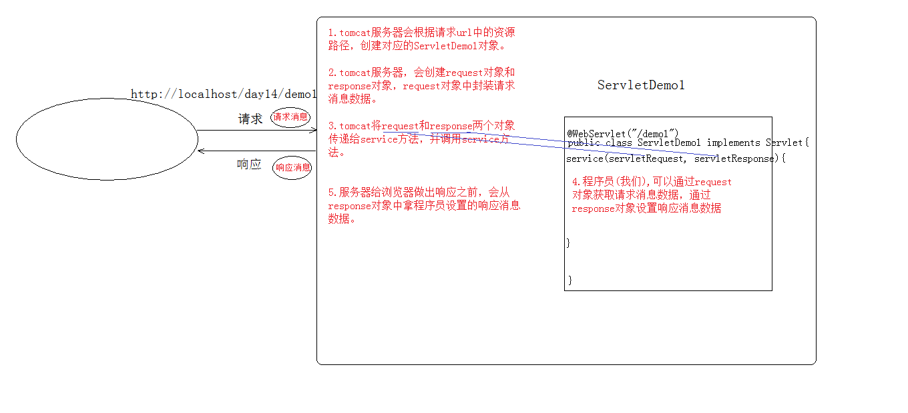

HTTP 响应消息
响应行
- 组成：协议/版本 响应状态码 状态码描述
- 响应状态码：服务器告诉客户端浏览器本次请求和响应的一个状态。
- 1xx：服务器就收客户端消息，但没有接受完成，等待一段时间后，发送 1xx 多状态码
- 2xx：成功。代表：200
- 3xx：重定向。代表：302（重定向），304（访问缓存）
- 4xx：客户端错误。
- 404（请求路径没有对应的资源）
- 405 请求方式没有对应的 doXxx 方法
- 5xx：服务器端错误。代表：500（服务器内部出现异常）
响应头：
- 格式：
头名称：值 - 常见的响应头：
Content-Type：服务器告诉客户端本次响应体数据格式以及编码格式Content-disposition：服务器告诉客户端以什么格式打开响应体数据in-line: 默认值，在当前页面内打开attachment;filename=xxx：以附件形式打开响应体。文件下载
响应空行
响应体
传输的数据
响应字符串格式
HTTP/1.1 200 OK
Content-Type: text/html;charset=UTF-8
Content-Length: 101
Date: Wed, 06 Jun 2018 07:08:42 GMT
<html>
<head>
<title>$Title$</title>
</head>
<body>
hello , response
</body>
</html>response 对象
功能
设置响应消息
设置响应行
- 格式：
HTTP/1.1 200 OK - 设置状态码：
setStatus(int sc)
- 格式：
设置响应头：
setHeader(String name, String value)设置响应体：
获取输出流
字符输出流：
PrintWriter getWriter()字节输出流：
ServletOutputStream getOutputStream()
使用输出流，将数据输出到客户端浏览器
完成重定向
//1. 设置状态码为 302
response.setStatus(302);
//2. 设置响应头 location
response.setHeader("location","/day15/responseDemo2");
//简单的重定向方法
response.sendRedirect("/day15/responseDemo2");forward 和 redirect 区别
- 重定向的特点：redirect
- 地址栏发生变化
- 重定向可以访问其他站点（服务器）的资源
- 重定向是两次请求。不能使用 request 对象来共享数据
- 转发的特点：forward
- 转发地址栏路径不变
- 转发只能访问当前服务器下的资源
- 转发是一次请求，可以使用 request 对象来共享数据
- 服务器输出字符数据到浏览器
- 步骤：
- 获取字符输出流
- 输出数据
- 乱码问题：
PrintWriter pw = response.getWriter();获取的流的默认编码是 ISO-8859-1- 设置该流的默认编码
- 告诉浏览器响应体使用的编码
//简单的形式，设置编码，是在获取流之前设置 response.setContentType("text/html;charset=utf-8");
- 步骤：
ServletContext 对象
代表整个 web 应用，可以和程序的容器（服务器）来通信
获取
- 通过 request 对象获取
request.getServletContext(); - 通过 HttpServlet 获取
this.getServletContext();
功能
获取 MIME 类型：
String getMimeType(String file)域对象：共享数据
setAttribute(String name,Object value)getAttribute(String name)removeAttribute(String name)ServletContext 对象范围：所有用户所有请求的数据
获取文件的真实（服务器）路径
String getRealPath(String path)String b = context.getRealPath("/b.txt");//web 目录下资源访问 System.out.println(b); String c = context.getRealPath("/WEB-INF/c.txt");//WEB-INF 目录下的资源访问 System.out.println(c); String a = context.getRealPath("/WEB-INF/classes/a.txt");//src 目录下的资源访问 System.out.println(a);